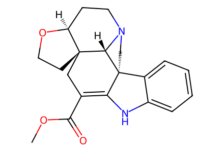
COC(=O)C1=C2Nc3ccccc3[C@@]23CCN2CC[C@@H]4OCC[C@]4(C1)[C@H]23Main article Schemes3–5 only. Public93-page SI located, but original PDF download returns403 and cannot be locally archived/hash-bound. Main unshown intermediate stages remain grouped; SI-only upstream preparations are not covered. Facts compiled deterministically; independent review pending.
完整 JSON · 逐步 CSV · 路线序列 · SDF · HRMS 核对
| 事件 | 分子连接 | 报告产率 | Canonical reaction SMILES |
|---|---|---|---|
| E01 | 13 → 14 | 14: 70% | Cc1cc2ccccc2[nH]1>>Cc1c(C=N[S@@](=O)C(C)(C)C)c2ccccc2n1S(=O)(=O)c1ccccc1 |
| E02 | 14 + 15 → 16 | 16: 86% | C=C(CCO[Si](C(C)C)(C(C)C)C(C)C)C(=O)OC.Cc1c(C=N[S@@](=O)C(C)(C)C)c2ccccc2n1S(=O)(=O)c1ccccc1>>C=CCN([C@@H]1c2c(n(S(=O)(=O)c3ccccc3)c3ccccc23)CC[C@]1(CCO[Si](C(C)C)(C(C)C)C(C)C)C(=O)OC)[S@@](=O)C(C)(C)C |
| E03 | 16 → 17 | 17: 66% | C=CCN([C@@H]1c2c(n(S(=O)(=O)c3ccccc3)c3ccccc23)CC[C@]1(CCO[Si](C(C)C)(C(C)C)C(C)C)C(=O)OC)[S@@](=O)C(C)(C)C>>CC(C)[Si](OCC[C@@]12C=CCN([S@@](=O)C(C)(C)C)[C@@H]1c1c(n(S(=O)(=O)c3ccccc3)c3ccccc13)CC2)(C(C)C)C(C)C |
| E04 | 17 → 18 | 18: 75% | CC(C)[Si](OCC[C@@]12C=CCN([S@@](=O)C(C)(C)C)[C@@H]1c1c(n(S(=O)(=O)c3ccccc3)c3ccccc13)CC2)(C(C)C)C(C)C>>CC(C)[Si](OCC[C@@]12C=CCN(CCO)[C@@H]1c1c(n(S(=O)(=O)c3ccccc3)c3ccccc13)CC2)(C(C)C)C(C)C |
| E05 | 18 → 19 | 19: 75% | CC(C)[Si](OCC[C@@]12C=CCN(CCO)[C@@H]1c1c(n(S(=O)(=O)c3ccccc3)c3ccccc13)CC2)(C(C)C)C(C)C>>COC(=O)C1=C2Nc3ccccc3[C@@]23CCN2CC=C[C@@](CCO)(C1)[C@H]23 |
| E06 | 19 → 20 | 20: 94% | COC(=O)C1=C2Nc3ccccc3[C@@]23CCN2CC=C[C@@](CCO)(C1)[C@H]23>>COC(=O)C1=C2Nc3ccccc3[C@@]23CCN2CC=C[C@@](CCOC(=O)c4ccc([N+](=O)[O-])cc4)(C1)[C@H]23 |
| E07 | 20 → 21 | 21: 64% | COC(=O)C1=C2Nc3ccccc3[C@@]23CCN2CC=C[C@@](CCOC(=O)c4ccc([N+](=O)[O-])cc4)(C1)[C@H]23>>COC(=O)C1=C2Nc3ccccc3[C@@]23CCN2C(C#N)C[C@@H]4OCC[C@]4(C1)[C@H]23 |
| E08 | 20 → 5 | 5: 74% | COC(=O)C1=C2Nc3ccccc3[C@@]23CCN2CC=C[C@@](CCOC(=O)c4ccc([N+](=O)[O-])cc4)(C1)[C@H]23>>COC(=O)C1=C2Nc3ccccc3[C@@]23CCN2CC[C@@H]4OCC[C@]4(C1)[C@H]23 |
| E09 | 5 → 22 | 22: 53% | COC(=O)C1=C2Nc3ccccc3[C@@]23CCN2CC[C@@H]4OCC[C@]4(C1)[C@H]23>>COC(=O)C1=C2Nc3c(OC)cccc3[C@@]23CCN2CC[C@@H]4OCC[C@]4(C1)[C@H]23 |
| E10 | 22 → 23 | not reported | COC(=O)C1=C2Nc3c(OC)cccc3[C@@]23CCN2CC[C@@H]4OCC[C@]4(C1)[C@H]23>>COc1cccc2c1NC1C(CO)C[C@]34CCO[C@H]3CCN3CC[C@]21[C@@H]34 |
| E11 | 23 → 9 | 9: 26% | COc1cccc2c1NC1C(CO)C[C@]34CCO[C@H]3CCN3CC[C@]21[C@@H]34>>C=C1C[C@]23CCO[C@H]2CCN2CC[C@]4(C1=Nc1c(OC)cccc14)[C@@H]23 |
| E12 | 21 + 24 + 9 → 26 | 26: 66% | C=C1C[C@]23CCO[C@H]2CCN2CC[C@]4(C1=Nc1c(OC)cccc14)[C@@H]23.C=[N+](C)C.COC(=O)C1=C2Nc3ccccc3[C@@]23CCN2C(C#N)C[C@@H]4OCC[C@]4(C1)[C@H]23.[I-]>>COC(=O)C1=C2Nc3ccccc3[C@@]23CCN2C(C#N)C4(CC5=C6N(C4)c4c(OC)cccc4[C@@]64CCN6CC[C@@H]7OCC[C@]7(C5)[C@H]64)[C@@H]4OCC[C@]4(C1)[C@H]23 |
| E13 | 26 → 29 | 29: 94% | COC(=O)C1=C2Nc3ccccc3[C@@]23CCN2C(C#N)C4(CC5=C6N(C4)c4c(OC)cccc4[C@@]64CCN6CC[C@@H]7OCC[C@]7(C5)[C@H]64)[C@@H]4OCC[C@]4(C1)[C@H]23>>COC(=O)C1=C2Nc3ccccc3[C@@]23CCN2C(C#N)C4(CC5C[C@]67CCO[C@H]6CCN(CCc6c5n(c5c(OC)cccc65)C4)C7)[C@@H]4OCC[C@]4(C1)[C@H]23 |
| E14 | 20 → 31 | 31: 90% | COC(=O)C1=C2Nc3ccccc3[C@@]23CCN2CC=C[C@@](CCOC(=O)c4ccc([N+](=O)[O-])cc4)(C1)[C@H]23>>COC(=O)C1=C2Nc3ccccc3[C@@]23CCN2C=C(C4C[C@@H]5OCC[C@@]56CC(C(=O)OC)=C5Nc7ccccc7[C@@]57CCN4[C@@H]67)[C@@H]4OCC[C@]4(C1)[C@H]23 |
| E15 | 31 + 24 + 9 → 3 | 3: 30% | C=C1C[C@]23CCO[C@H]2CCN2CC[C@]4(C1=Nc1c(OC)cccc14)[C@@H]23.C=[N+](C)C.COC(=O)C1=C2Nc3ccccc3[C@@]23CCN2C=C(C4C[C@@H]5OCC[C@@]56CC(C(=O)OC)=C5Nc7ccccc7[C@@]57CCN4[C@@H]67)[C@@H]4OCC[C@]4(C1)[C@H]23.[I-]>>COC(=O)C1=C2Nc3ccccc3[C@@]23CCN2C[C@@]4(CC5=C6N(C4)c4c(OC)cccc4[C@@]64CCN6CC[C@@H]7OCC[C@]7(C5)[C@H]64)[C@@H]4OCC[C@]4(C1)[C@H]23 |

COC(=O)C1=C2Nc3ccccc3[C@@]23CCN2CC[C@@H]4OCC[C@]4(C1)[C@H]23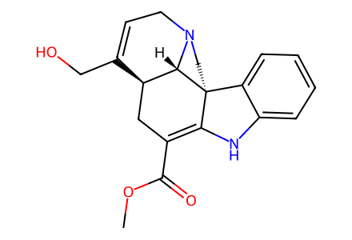
COC(=O)C1=C2Nc3ccccc3[C@@]23CCN2CC=C[C@@](CCO)(C1)[C@H]23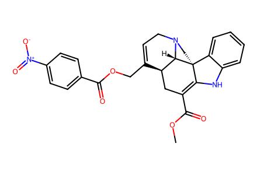
COC(=O)C1=C2Nc3ccccc3[C@@]23CCN2CC=C[C@@](CCOC(=O)c4ccc([N+](=O)[O-])cc4)(C1)[C@H]23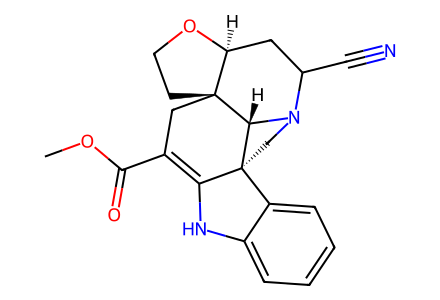
COC(=O)C1=C2Nc3ccccc3[C@@]23CCN2C(C#N)C[C@@H]4OCC[C@]4(C1)[C@H]23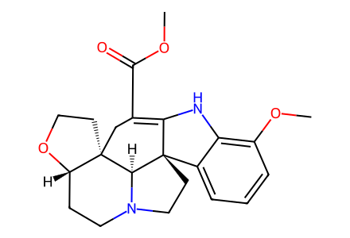
COC(=O)C1=C2Nc3c(OC)cccc3[C@@]23CCN2CC[C@@H]4OCC[C@]4(C1)[C@H]23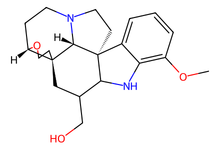
COc1cccc2c1NC1C(CO)C[C@]34CCO[C@H]3CCN3CC[C@]21[C@@H]34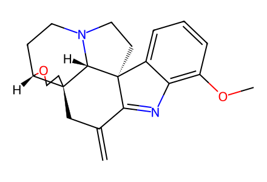
C=C1C[C@]23CCO[C@H]2CCN2CC[C@]4(C1=Nc1c(OC)cccc14)[C@@H]23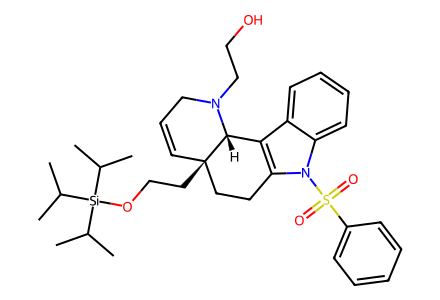
CC(C)[Si](OCC[C@@]12C=CCN(CCO)[C@@H]1c1c(n(S(=O)(=O)c3ccccc3)c3ccccc13)CC2)(C(C)C)C(C)C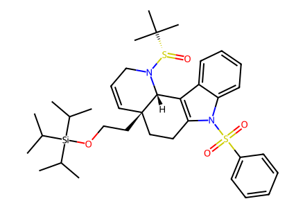
CC(C)[Si](OCC[C@@]12C=CCN([S@@](=O)C(C)(C)C)[C@@H]1c1c(n(S(=O)(=O)c3ccccc3)c3ccccc13)CC2)(C(C)C)C(C)C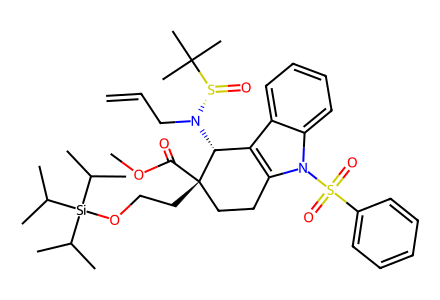
C=CCN([C@@H]1c2c(n(S(=O)(=O)c3ccccc3)c3ccccc23)CC[C@]1(CCO[Si](C(C)C)(C(C)C)C(C)C)C(=O)OC)[S@@](=O)C(C)(C)C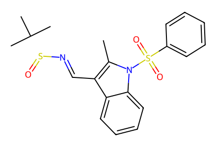
Cc1c(C=N[S@@](=O)C(C)(C)C)c2ccccc2n1S(=O)(=O)c1ccccc1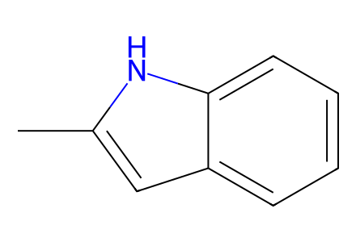
Cc1cc2ccccc2[nH]1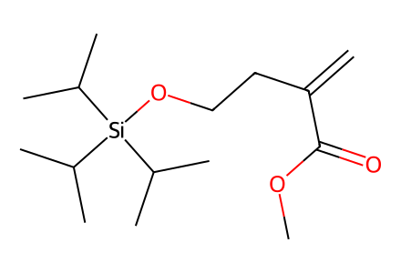
C=C(CCO[Si](C(C)C)(C(C)C)C(C)C)C(=O)OC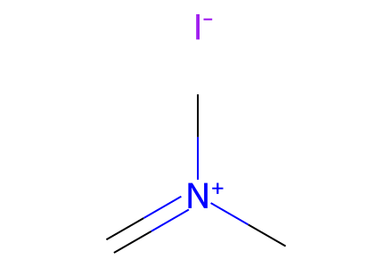
C=[N+](C)C.[I-]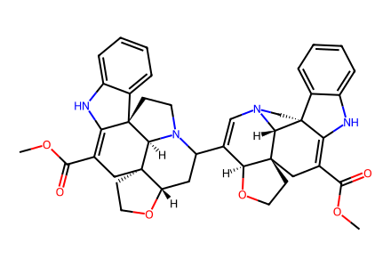
COC(=O)C1=C2Nc3ccccc3[C@@]23CCN2C=C(C4C[C@@H]5OCC[C@@]56CC(C(=O)OC)=C5Nc7ccccc7[C@@]57CCN4[C@@H]67)[C@@H]4OCC[C@]4(C1)[C@H]23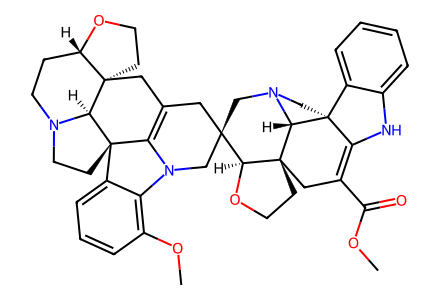
COC(=O)C1=C2Nc3ccccc3[C@@]23CCN2C[C@@]4(CC5=C6N(C4)c4c(OC)cccc4[C@@]64CCN6CC[C@@H]7OCC[C@]7(C5)[C@H]64)[C@@H]4OCC[C@]4(C1)[C@H]23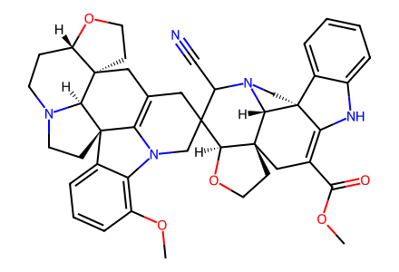
COC(=O)C1=C2Nc3ccccc3[C@@]23CCN2C(C#N)C4(CC5=C6N(C4)c4c(OC)cccc4[C@@]64CCN6CC[C@@H]7OCC[C@]7(C5)[C@H]64)[C@@H]4OCC[C@]4(C1)[C@H]23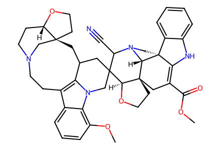
COC(=O)C1=C2Nc3ccccc3[C@@]23CCN2C(C#N)C4(CC5C[C@]67CCO[C@H]6CCN(CCc6c5n(c5c(OC)cccc65)C4)C7)[C@@H]4OCC[C@]4(C1)[C@H]23